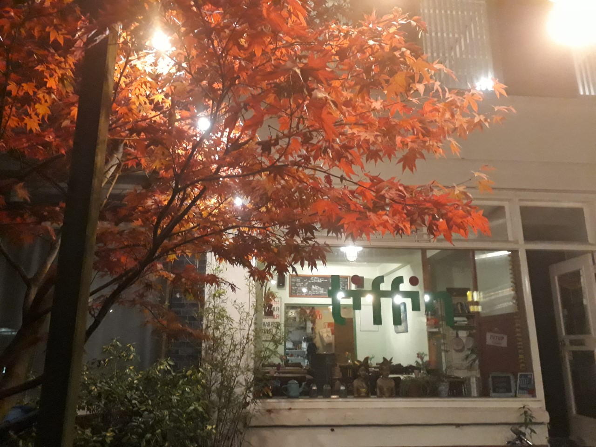
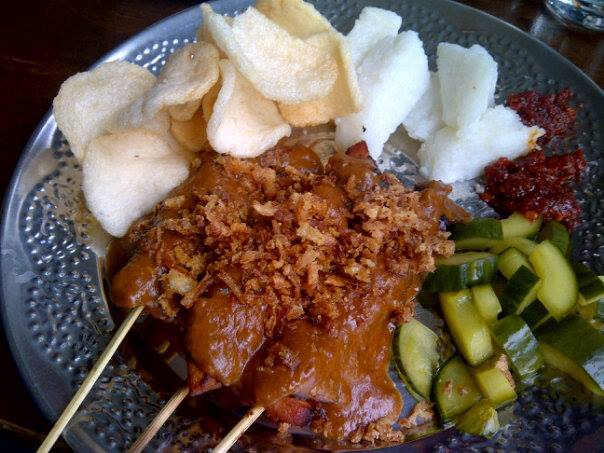
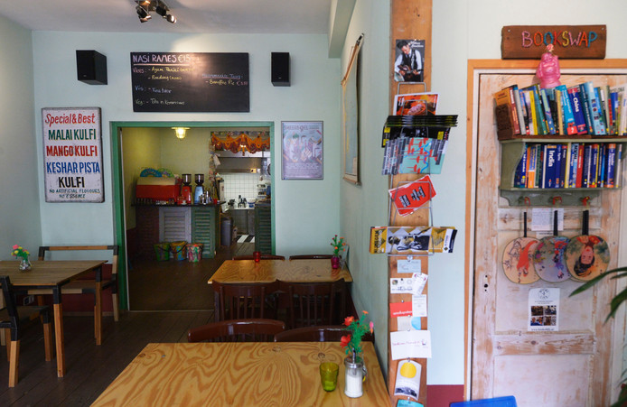

Echt Indonesisch eten in Bottendaal
Een klein restaurant net buiten het centrum van Nijmegen. Dertig plaatsen, een korte kaart, en alles met aandacht en geduld bereid. En dat proef je.
Woensdag t/m zondag open, keuken tot 20:30

Koude voorgerechten
- Thaise loempia garnaal7,50
- Thaise loempia tempeh7,50
- Portie kroepoek3,00
- Portie emping3,00
Warme voorgerechten
- Risoles kip7,75
- Sateh ayam kip2,50 per stokje
- Sateh tempeh vega2,50 per stokje
- Dumplings5,75

Soepen
- Soto ayam10,00
- Noodlesoup12,50
- Linzensoep vega, er is niet altijd7,00
Hoofdgerechten
- Nasi goreng met kip, garnaal en 2 stokjes sateh24,50
- Nasi rames rendang rundvlees in kokos gegaard24,50
- Nasi rames paniki hete kip uit Sulawesi24,50
- Nasi rames babi ketjap varkensvlees in ketjap bereid24,50

Vegetarische hoofdgerechten
- Nasi goreng tempeh plus 2 stokjes vega sateh24,50
- Nasi rames tahu terong gebakken tofu met aubergine25,00
- Nasi rames tahu rendang rendang van tofu24,50
- Nasi rames tahu tomat tofu in tomatencurry24,50
Nagerechten
- Spekkoek pandan laagjescake4,00
- Banoffee pie bananen-karameltaart5,00
- Cendol es kokosmelk met tapioca en Javaanse suiker, plus een bolletje ijs8,50
- Tolong dadar pandanpannenkoek met kokosvulling6,00
- IJs bolletje mango-ijs en vanille-ijs met (tropisch) fruit8,50
Afhalen
De hele menukaart is ook mee te nemen. Bestellen gaat alleen telefonisch, woensdag tot en met zondag van 15:00 tot 20:30.
024 845 59 47Catering
Indonesisch eten op je feest, borrel of bijeenkomst? Catering is mogelijk. Vraag naar de mogelijkheden, telefonisch of per mail.
Mail over cateringEven terug in Azië
Aan de Burghardt van den Berghstraat, in het gezellige buurtje Bottendaal net buiten het centrum van Nijmegen, vind je het kleine Indonesische restaurant Tiffin. Hier kom je voor de authentieke Indonesische keuken.
Het sobere maar huiselijke interieur, met dertig zitplaatsen, geeft je het gevoel dat je weer even terug bent in Azië. De menukaart is klein, zodat alle gerechten met aandacht en geduld worden bereid.
In de zomer is er ook een terrasje, waar je uit de felle zon niet alleen van het eten geniet maar ook van de levendige buurt waar Bottendaal om bekendstaat.
Wij hebben er zin in en hopen jullie ook. Tot gauw!
Team Tiffin

Openingstijden
| Maandag | Gesloten |
|---|---|
| Dinsdag | Gesloten |
| Woensdag | 17:00 – 21:30 |
| Donderdag | 15:00 – 21:30 |
| Vrijdag | 15:00 – 21:30 |
| Zaterdag | 15:00 – 21:30 |
| Zondag | 15:00 – 21:30 |
De keuken sluit om 20:30.
Reserveren
Reserveren doe je door even te bellen. Binnenlopen mag natuurlijk ook.
024 845 59 47
lunchroomtiffin@hotmail.com
6512 DH Nijmegen
Werken bij ons
We zijn regelmatig op zoek naar nieuwe mensen in de bediening, de keuken en de afwas. De werktijden zijn van 17:00 tot 22:00. De ideale bijbaan voor studenten.
Reageren? Loop even binnen, of stuur een mailtje.
Mail je reactie